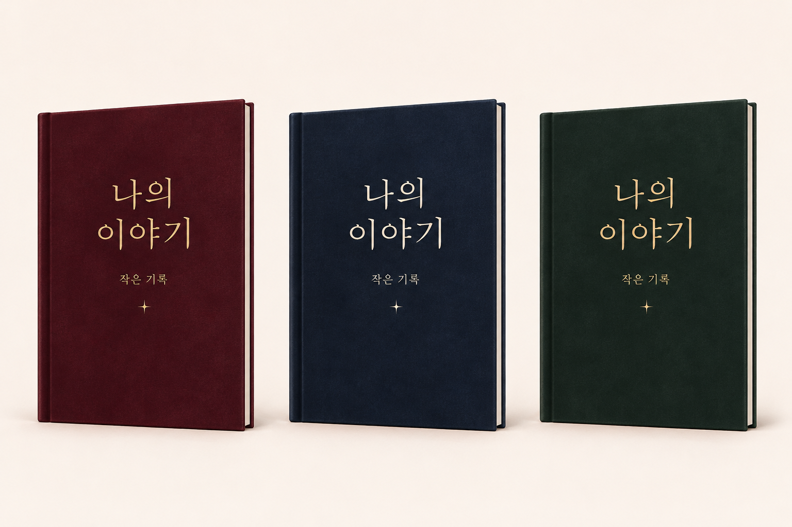

A
버건디
짙은 붉은 바탕과 절제된 금빛 제목.
약 148px 폭에서 보는 제목과 양장 형태
짙은 단색과 은은한 무광 표면, 작은 금박·아이보리 제목을 비교합니다. 세 후보는 같은 제목과 같은 얇은 양장 형태를 사용했습니다.
A · B · C의 3색을 표지에 순환 적용합니다. 서비스 전체 테마를 뜻하지 않습니다.

짙은 붉은 바탕과 절제된 금빛 제목.
약 148px 폭에서 보는 제목과 양장 형태
짙은 푸른 바탕과 부드러운 아이보리 제목.
약 148px 폭에서 보는 제목과 양장 형태
깊은 초록 바탕과 차분한 금빛 제목.
약 148px 폭에서 보는 제목과 양장 형태